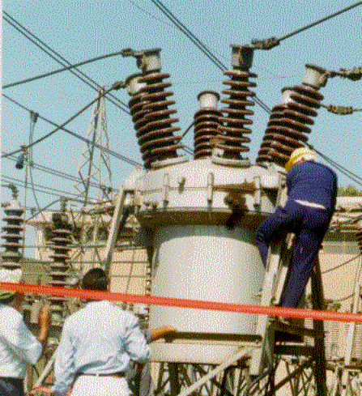
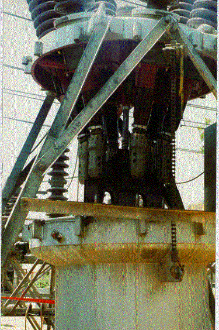
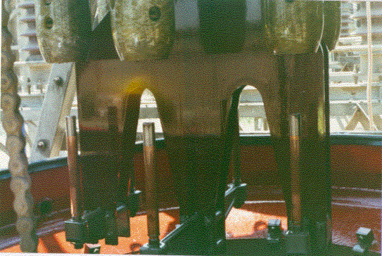

|
Substations |
Technical Procedure |
Bulk Oil Circuit Breaker 66 kV
BVRP
17
England
Status: APPROVED
Major Maintenance Procedures (P1-Y5)
|
|
|
|||
| Equipment Bulk Oil Circuit Breaker 66 kV BVRP
17 England |
Document No: CB-032-r0 | |||
| Issued to: Networks | ||||
|
Status: APPROVED |
||||
| Procedure: Major Maintenance Procedures (P1-Y5) |
Approved Date: 23 Nov 1998 | |||
| Date to be Reviewed: Nov 2003 | ||||
Introduction
This document outlines the major maintenance procedures P1, to be carried out every five years as indicated by Y5 in the title block.
They include testing and major maintenance. In addition to the procedures listed, it is expected the checks, which are done more frequently, would also be completed at this time.
Safety Precaution
A work permit must be issued.
Personnel carrying out the maintenance should be trained and qualified or directly supervised by some one who is.
Safety fence with caution marks around the work area is required.
Wear your safety Helmet.
CB must be isolated and proper earthing at the two sides.
Cut off the DC voltage.
Use only fiberglass ladder.
Environmental Recommendation
Do not throw any oil into the sewage because the oil prevent the sewage treatment process
Collect the oil that drained out of the poles into a barrel and return it back to the vendor to recycle it to save money.
Collect the oil used in washing the poles in another barrel and do not re-use it for filling the poles unless filtered, dried and its dielectric strength measured with an oil tester (not less than 40kV/2.5 mm).
Do not burn cloth used in cleaning but collect it and send it to the dump.
Tools and Equipment
Safety helmet, safety belt, and tool set,
Calibrated Manometer,
Torque wrench and one set of metric open-end box wrenches,
One set of screwdrivers, Fine file and fine emery cloth, Pipe grip,
Air blower, Hammer 1/2 kg and rubber hammer,
Fiber glass ladder, Special clamp for lowering the oil tank,
Petroleum jelly (Vaseline) - Pure Alcohol,
Clean wipers, Seven barrels of oil its dielectric strength 40 kV/2.5mm,
Heavy machine oil for the operating pump, Tin cans to hold bolts, nuts, studs, washers......etc
Empty tank for used oil, Dielectric Strength tester, Rubber hose for outlet valve.
Work to be carried out
Before starting work be sure that the breaker is open.
Erect the special clamp for lowering the oil tank.
Open the plug of outlet valve and Install a rubber hose to the outlet valve instead of the plug. Use spanner 32
Open the outlet valve to drain all oil in empty barrels.
Release the 12 bolts connecting the tank to its cover (1fig.1). Use spanner 36
Using the special clamp lower the oil tank (fig.2).
Check the mechanical parts for free movement by control switch.
Withdraw the main fuses.
Check the moving and fixed contacts (fig.3).
If their surfaces are in a good condition clean them with new oil and clean wipers.
If their surfaces are slightly burnt it should be cleaned by a fine file and fine emery paper.
If their surfaces are burned and punctured it should be replaced as follows:
To disassemble the moving contact, unscrew it using pipe grip provided for this purpose.
To disassemble the arc chamber unscrew it using pipe grip to be disconnected from its place
To
disassemble the fixed contact, unscrew the 4 nuts connecting the fixed
contact to the arc chamber (1fig.4).
Clean all the parts using pure Alcohol and reassemble all parts adjusting
the moving contact length to be 20 cm,
ensure it is well tightened after adjustment. Use spanner 17
Reassemble and tighten the fixed contact to its original position. Use spanner 17
Check and tight the 4 studs of the current transformer. Use spanner 17
Remove the dirty oil from bottom of the tank and clean all the tank with new oil several times to make sure it is properly cleaned.
Clean the 2 oil indicators with clean oil and wiper
Raise the tank to its previous position using the special clamp
Tighten the 12 bolts connecting the tank with its cover. Use spanner 36
Check the oil level in the bushings, check the porcelain for cracks or other damage and clean it.
Check
the tightness of the 8 bolts of the bushings bases Use spanner 19
Install again the rubber hose to the outlet valve and refill the tank with new oil to the right mark on the oil level indicator.
Perform dielectric test on the oil (it must not less than 40KV/2.5 mm).
Clean all parts of CB with dry cloth.
Perform Micro-ohm and Timing tests.
Record all that has been done in maintenance Card.
Before putting the CB in service, clean the operating box with flow of dry air and retighten all terminals of control circuits.
Location:
Circuit Breaker Code:
Checked by: Date:
Signature:
|
 Figure (1) |
|
|
|
 |
|
Figure (2) |

Figure 3
Figure 4